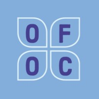

Activism
I got involved with social activism going into high school. Here are some of the organizations I am involved with and some of the projects I've taken on!
Our Future of Change
Executive Director: Sep 2022 - Present
- → Collaborates with other executive members to plan events & fundraise
- → Manages & provides mentorship on OFOC clubs, their progress & funding
- → Raises awareness for the global prevalence of human trafficking & provides resources for students globally to get involved in the fight against it
Events Director: Aug 2021 - Aug 2022
- → Led "Coding for Change" Event with over 30 participants & $200 in donations, teaching participants to code a webpage with information regarding anti-trafficking
- → Led Interview Series with 8 interviewees experienced in anti-trafficking work & youth activism
Ambassador: Aug 2020 - Jul 2021
- → Contributed to video conference with over 50 attendees
- → Raised over $500 for organization by participating in 5K Event
Around the World - A Virtual 5K
I raised over $500 for this fundraiser and was featured on the OFOC IG to give advice on how to fundraise effectively!
A Glimpse of a Survivor's Story
This was a free Zoom webinar featuring short documentary clips and guest speakers who described their experiences in anti-trafficking activism. With over 50 attendees, our participants left the event having learned more about human trafficking and felt hopeful through our discussion regarding how we can contribute to building a better future for survivors. I helped plan this event and the logistics!
Coding for Change
This workshop took place on July 24th and 25th, 2021. Participants discussed various aspects of human trafficking with youth leaders and learned how to code their own webpage!  We coded almost 30 webpages, and raised almost $200! I led this project, from planning logistics to teaching our instructors to marketing! 
Interview Series
In this educational series, participants learned about various aspects on Human Trafficking from outstanding interviewees! We posted interview videos, articles summarizing the content, and informative infographics on Instagram to reach a wide audience. Some of our prominent speakers include Sarah Symons [the Founder of Her Future Coalition], Pia Ramchandani [a PhD student at UPenn], and Jessie Brunner & Professor Grant Miller [from the Stanford Human Trafficking Data Lab]! 
Justice for Society

Events Director: Sep 2021 - Aug 2022
- → Events Director for federally incorporated non-profit, youth-led organization dedicated to educating & raising awareness on social issues
- → Planned, coordinated & hosted bi-monthly conference events
- → Coordinated tasks to events coordinators & coordinated with speakers (from the industry & academia)
- → We hosted the following conferences with over 50 participants...